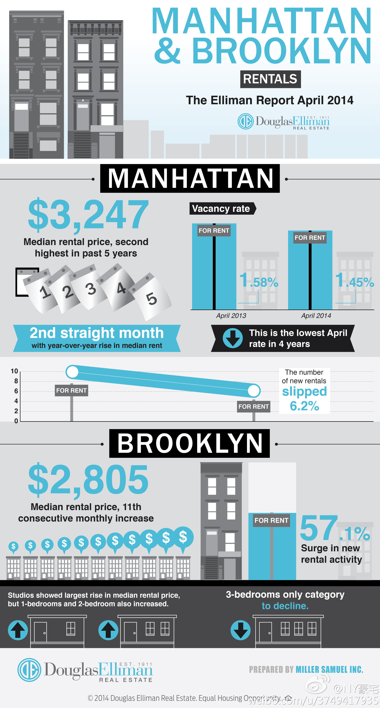

这个名单要加上 @boost9 //@肖思南_nihil9:Msra伟大 当年每天只能跪在 //@叶阳Victor9:msra，值得珍惜的alunmi network //@黑八刘:zz走了啊…… //@王小川: 想20年前，最优秀的计算机人才对msra趋之若鹜，以能效命于msra为荣。如今风云变幻，互联网成了新宠。缅怀msra，中国计算机科学家的黄埔军校。---:抱歉，作者已设置仅展示半年内微博，此微博已不可见。
CC @立奇9 //@巴曙松:居大不易 //@食色纽约:日子没法过了, 租房的可以吐槽了！#纽约生活#@纽约豪宅:在纽约租房子的人又可以吐槽了:曼哈顿&布鲁克林的公寓租金持续上涨(2014年春季报告). 1, 曼哈顿公寓中间价$3,247,是过去5年第二高; 2, 新增房源却降低了6.2%,4年中最低; 3,布鲁克林的租金连续11个月攀高; 4, Studio涨价最多, 1-Bedroom & 2-Bedroom也涨,唯一降价是3-Bedroom - 消息来自Douglas Elliman 